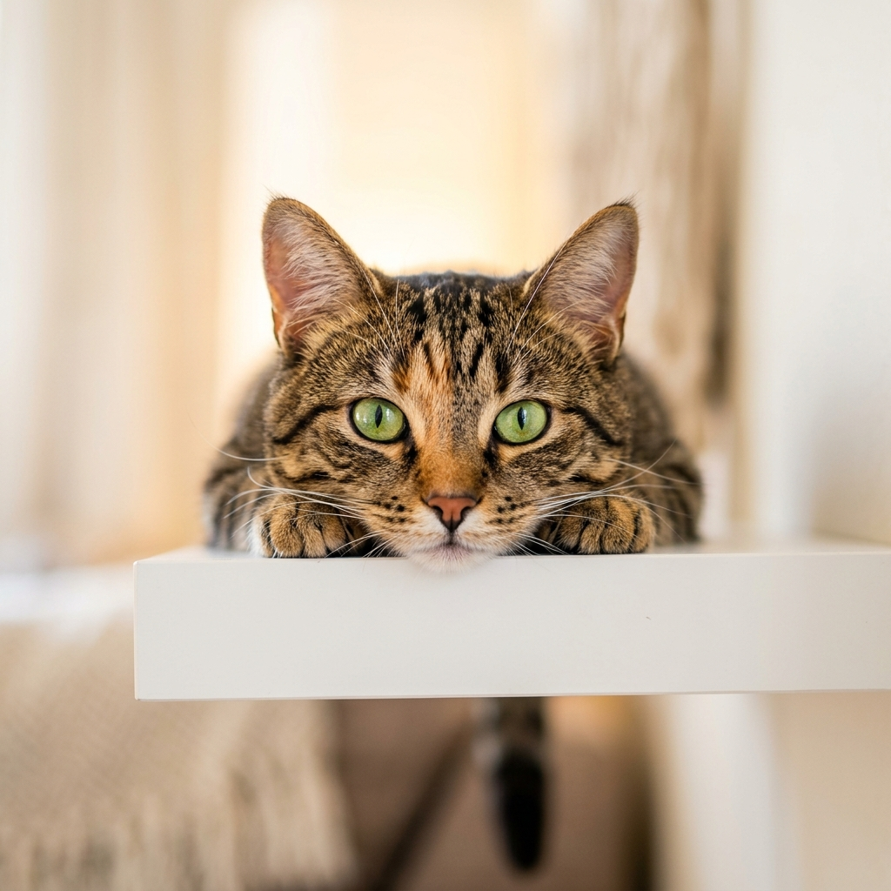

KITTEN
A thoughtful guide to understanding, caring for, and supporting your kitten through their earliest stage of life. From the first days at home to building healthy routines, confidence, and good habits — discover what your kitten needs as they grow.
THE EARLY YEARS MATTER
A kitten's first months are filled with rapid physical, emotional, and behavioural changes. The routines you create now can help shape how they feel about people, their environment, grooming, play, and everyday life.
We Two Pets brings everything together in one place — simple, practical, and easy to understand.
Kitten Care: Everything You Need to Know About Raising a Happy, Healthy Kitten
The first months of a kitten's life are about much more than feeding and play. Here's how to build healthy routines, understand behaviour, create the right environment, and help your kitten grow with confidence.
The Beginning of a Lifetime
The kitten stage is a period of fast growth and discovery. Your kitten is learning what is safe, how to interact with people, how to explore their surroundings, and how to develop everyday habits.
Small experiences during this stage can influence their confidence and behaviour later in life.
What is changing?
Physical growth • Coordination • Social behaviour • Sleep patterns • Play behaviour • Communication • Environmental awareness
Your Goal
You don't need to create a perfect environment. You need to create a safe, predictable, positive environment where your kitten can gradually learn.
Building Healthy Beginnings
Regular veterinary care, preventive routines, observation, and a safe environment are important parts of raising a kitten.
Important areas to understand:
- Veterinary Care: Understand the importance of early veterinary visits and preventive care.
- Vaccinations: Follow the vaccination schedule recommended by your veterinarian.
- Parasite Prevention: Ask your veterinarian about appropriate parasite prevention for your kitten.
- Dental Development: Kittens go through important changes as their teeth develop.
- Growth & Development: Track changes in weight, activity, appetite, and behaviour.
WATCH FOR CHANGES
If your kitten suddenly becomes unusually tired, stops eating, has difficulty breathing, experiences repeated vomiting/diarrhea, or shows another concerning change, seek veterinary advice.
Important: Online guides can help you understand pet care, but they should not replace professional veterinary advice.
Gentle Care From Day One
Grooming shouldn't feel like a battle. The goal during kittenhood is to help your kitten become comfortable with gentle handling.
Start Slowly:
- Brushing: Introduce a soft brush gradually and keep early sessions short.
- Nail Care: Let your kitten become familiar with having their paws handled before attempting nail trimming.
- Ear & Eye Care: Learn what normal looks like and avoid unnecessary cleaning unless recommended.
- Dental Care: Introduce appropriate dental routines gradually.
- Handling: Gently handle paws, ears, mouth, and body so routine care becomes familiar.
THE RULE
Short + calm + positive = better grooming experiences.
Growing With Good Nutrition
Kittens have different nutritional needs from adult cats because they are actively growing.
Build Good Feeding Habits:
- Consistency: Create a predictable feeding routine.
- Portion Awareness: Follow appropriate feeding guidance rather than simply filling the bowl whenever it looks empty.
- Hydration: Make fresh water easily accessible.
- Treats: Treats should complement the overall diet rather than replace balanced nutrition.
- Food Choices: Choose nutrition appropriate for kittens and follow guidance from your veterinarian.
A SIMPLE REMINDER
Growth needs the right balance — not simply more food.
Understanding Your Kitten
Scratching, biting, hiding, climbing, running, and sudden bursts of energy are often normal parts of kitten behaviour.
SCRATCHING: Scratching is a natural behaviour. Instead of simply trying to stop it, provide appropriate scratching surfaces in places your kitten naturally spends time.
BITING: Kittens often explore through play. Redirect biting toward appropriate toys rather than encouraging hands to become toys.
HIDING: A new environment can feel overwhelming. Give your kitten a quiet, safe place where they can retreat and observe.
LITTER HABITS: Provide an accessible litter setup and keep it clean. Unexpected changes in litter behaviour can sometimes indicate stress or a health issue.
SOCIALISATION: Positive experiences with people, sounds, handling, and environments can help build confidence.
A World Made for Exploring
A kitten's environment should give them opportunities to:
- EXPLORE: Safe spaces to investigate.
- CLIMB: Appropriate vertical areas.
- PLAY: Interactive toys and play sessions.
- SCRATCH: Suitable scratching surfaces.
- REST: Quiet, comfortable sleeping areas.
- OBSERVE: Safe places from which they can watch the world.
THINK BEYOND TOYS
Enrichment isn't about buying more things. It's about creating opportunities for natural behaviour.
What Does a Kitten Actually Need?
Instead of encouraging unnecessary purchases, start with the essentials:
| Essential | Why It Matters |
|---|---|
| Food & water setup | Everyday feeding |
| Litter setup | Hygiene & routine |
| Comfortable resting space | Sleep & security |
| Scratching surface | Natural scratching |
| Safe toys | Play & enrichment |
| Carrier | Safe transportation |
| Grooming basics | Everyday care |
| Identification | Safety & responsibility |
BUY SMART
Need it → Understand it → Compare it → Then buy it.
This becomes one of the strongest differences between a normal pet blog and We Two Pets.
Your Everyday Kitten Checklist
DAILY
- ☐ Fresh water
- ☐ Appropriate meals
- ☐ Litter area checked
- ☐ Play & interaction
- ☐ Safe environment
- ☐ Observe behaviour
WEEKLY
- ☐ Grooming check
- ☐ Nail/paw observation
- ☐ Weight/growth tracking
- ☐ Clean key areas
- ☐ Check toys & accessories
REGULARLY
- ☐ Veterinary care
- ☐ Preventive care
- ☐ Dental routine
- ☐ Review changing needs
- ☐ Update products as kitten grows
Common Questions Answered
Give Them a Good Beginning
Your kitten doesn't need a perfect life. They need safety, consistency, care, patience, and opportunities to grow. The little routines you create today can become the foundation for a confident and healthy life tomorrow.